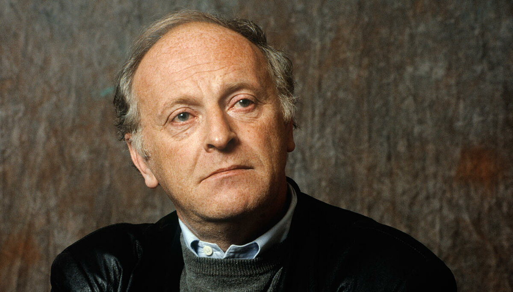

Иосиф Бродский родился в Ленинграде в 1940 году. Спустя 42 года в интервью голландскому журналисту он так вспоминал о родном городе: «Ленинград формирует твою жизнь, твое сознание в той степени, в какой визуальные аспекты жизни могут иметь на нас влияние <…> Это огромный культурный конгломерат, но без безвкусицы, без мешанины. Удивительное чувство пропорции, классические фасады дышат покоем. И все это влияет на тебя, заставляет и тебя стремиться к порядку в жизни, хотя ты и сознаешь, что обречен. Такое благородное отношение к хаосу, выливающееся либо в стоицизм, либо в снобизм».
В том же году в США вышел первый сборник стихов Бродского, подготовленный без ведома автора на основе переправленных на Запад материалов самиздата. Следующая книга, «Остановка в пустыне», вышла в Нью-Йорке в 1970 году — она считается первым авторизованным изданием Бродского. После ссылки поэта зачислили в некую «профессиональную группу» при Союзе писателей, что позволило избежать дальнейших подозрений в тунеядстве. Но на родине печатали только его детские стихи, иногда давали заказы на переводы поэзии или литературную обработку дубляжа к фильмам.
В 1987 году Иосифу Бродскому была присуждена Нобелевская премия по литературе с формулировкой «За всеобъемлющую литературную деятельность, отличающуюся ясностью мысли и поэтической интенсивностью». В 1991 году Бродский занял пост поэта-лауреата США — консультанта Библиотеки Конгресса и запустил программу «Американская поэзия и грамотность» по распространению среди населения дешевых томиков стихов. В 1990 году поэт женился на итальянке с русскими корнями Марии Соццани, но их счастливому союзу было отпущено всего пять с половиной лет.
